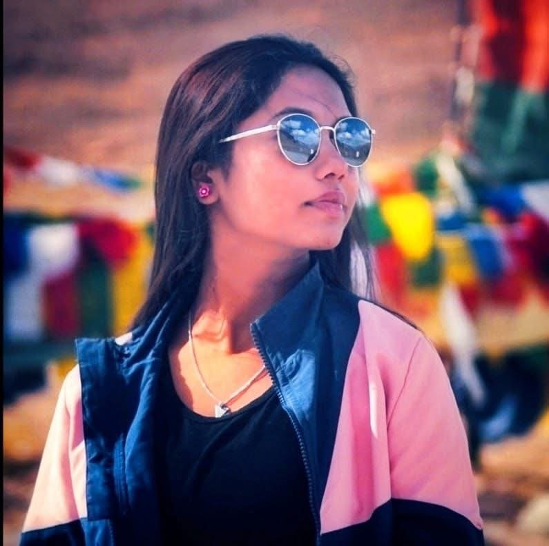

The Professional
Senior Video Editor & Post-Production Lead
5 years of post-production leadership and 100+ completed short & long-form films. Former Senior Video Editor at The Unscripted India, directing multicam documentary edits, ACEScc color science, and commercial delivery.

5 Yrs Leadership
The Unscripted India
100+ Videos Edited
DaVinci Resolve 19
ACEScc Pipeline
Explore Career Timeline